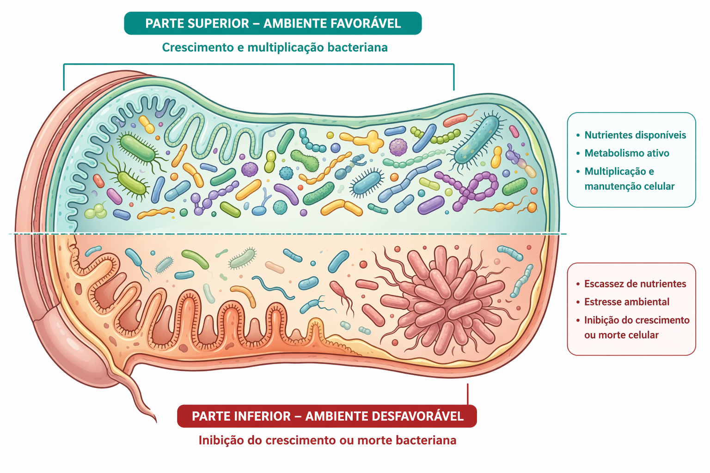

Associação antibacteriana
A associação de antibacterianos deve ser compreendida como uma intervenção que modifica o ambiente microbiológico do organismo. Cada fármaco exerce uma pressão seletiva própria, determinada por seu mecanismo de ação, perfil farmacodinâmico e espectro de atividade sobre diferentes populações bacterianas 1,2.
Quando dois antibacterianos são utilizados simultaneamente, essas pressões passam a atuar de forma concomitante sobre o ecossistema microbiano do paciente. O efeito não se restringe ao microrganismo responsável pela infecção. Populações comensais e microrganismos transitórios que compartilham o mesmo nicho anatômico também são expostos à intervenção farmacológica 3,4.
Esse processo altera a composição da microbiota e estabelece novos gradientes de seleção bacteriana. Espécies mais suscetíveis tendem a ser reduzidas, enquanto microrganismos com menor suscetibilidade relativa podem persistir ou expandir-se no ambiente modificado 3,4.

Do ponto de vista do patógeno envolvido na infecção, a exposição combinada pode produzir diferentes cenários. A interação entre os agentes pode acelerar a redução da carga bacteriana, modificar a probabilidade de sobrevivência de subpopulações menos suscetíveis ou, em algumas situações, não produzir efeito adicional relevante em comparação à monoterapia adequada 1.
Entretanto, a alteração ecológica provocada pela associação ultrapassa o patógeno tratado. A microbiota intestinal, por exemplo, constitui um ecossistema complexo que participa de funções metabólicas, imunológicas e de proteção contra colonização por patógenos. A exposição a antibacterianos, especialmente de amplo espectro ou em combinações terapêuticas, pode reduzir significativamente sua diversidade 3.
A perda dessa diversidade facilita a expansão de microrganismos oportunistas previamente suprimidos. A infecção por Clostridioides difficile constitui um exemplo clássico desse processo onde a redução da flora intestinal protetora cria condições favoráveis para a proliferação bacteriana e a produção de toxinas 5.
Esse ecossistema é tão relevante, que as diretrizes clínicas atuais, como as da American Gastroenterological Association, recomendam formalmente o transplante de microbiota fecal para a maioria dos pacientes com Clostridioides difficile recorrente, visando restaurar especificamente o equilíbrio do microbioma intestinal suprimido pelos antibacterianos 6.
Por essa razão, a utilização simultânea de antibacterianos deve estar vinculada a um objetivo biológico claro. Na ausência desse objetivo, a associação tende a ampliar a exposição ecológica sem produzir benefício proporcional na dinâmica infecciosa 1,3,4.
Como consequência direta dessa contínua pressão seletiva e alteração ecológica, observa-se a rápida expansão de patógenos de difícil tratamento. Um reflexo disso é a atualização de 2024 da Lista de Patógenos Prioritários da Organização Mundial da Saúde (OMS), que classifica bactérias Gram-negativas (como Enterobacterales e Acinetobacter baumannii resistentes a carbapenêmicos), além de patógenos de aquisição comunitária em rápida expansão, como prioridades críticas e altas para a saúde pública global 7.